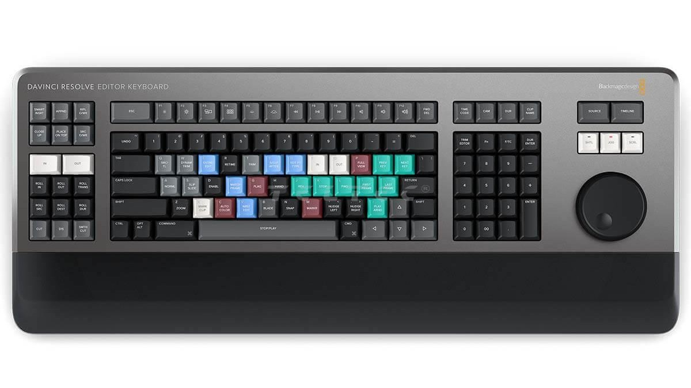

Які бувають спеціалізовані клавіатур?
-
Клавіатури для відеомонтажу та графіки
Ці клавіатури підтримують специфічні функції для роботи в програмах типу Adobe Premiere, Photoshop чи DaVinci Resolve.
У цих клавіатур виділені клавіші для гарячих команд (play, cut, zoom), розширений функціонал за допомогою коліщаток або трекболів маркування клавіш для конкретного ПЗ.
- 
-
Клавіатури для однієї руки
Ці клавіатури Розраховані для роботи лише однією рукою, часто використовуються в іграх або спеціалізованих завданнях.
У цих невелика кількість програмованих клавіш, зручне розташування кнопок для швидкого доступу та зазвичай вони мають допоміжний джойстик.
-
Брайлівські клавіатури
Ці клавіатури призначені для людей із порушеннями зору.
Ці клавіатури мають кнопки із рельєфними символами шрифту Брайля та можуть мати голосовий супровід або підтримувати дисплеї Брайля.
-
Кастомні клавіатури
Це клавіатури, створені на замовлення або зібрані вручну користувачем.
Ці клавіатури дозволяють налаштовувати зовнішній вигляд, функціонал, звук і відчуття під час набору тексту під власні потреби та на будь-який бюджет, але на це требо витратити купу часу.
-
Спліт клавіатури
Це тип клавіатури, у якій клавіші розділені на дві (або більше) частини.
У цих клавіатур зазвичай розділений корпус, для індівідуального розположення під фізіологічні потреби, ергономічний дизайн та програмованість.